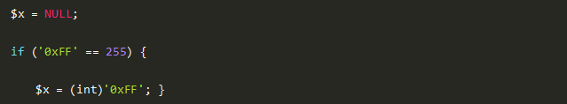
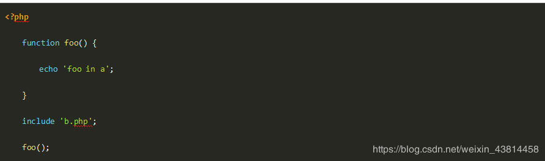
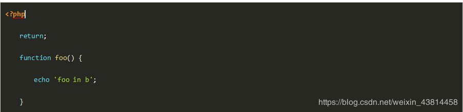
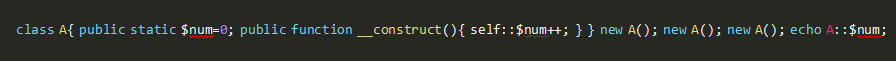

一、单选题（共27题，每题5分）
1.Memcache与Redis的比较错误的是？
A、Memcache过期后，不删除缓存，会导致下次取数据数据的问题，Redis有专门线程，清除缓存数据；
B、Memcache和redis都是只支持单线程；CPU利用方面Memcache和redis部分伯仲
C、Memcache只支持key value存储方式，Redis支持更多的数据类型，比如Key value，hash，list，set，zset；
D、Memcache自身不支持持久化，Redis支持持久化；
参考答案：B
答案解析：
Memcache支持多线程，redis支持单线程；CPU利用方面Memcache优于redis
2.mysql5.7中关于json类型的说明，不对的是那个
A、JSON数据可以做有效性检查
B、json数据中，还是需要遍历所有字符串才能找到数据
C、JSON使得查询性能提升
D、JSON支持部分属性索引，通过虚拟列的功能可以对JSON中的部分数据进行索引
参考答案：B
答案解析：
原生的JSON优势如下： 1. 存储上类似text,可以存非常大的数据。 2. JSON有效性检查：插入的数据必须是JSON类型的字符串才行。 3. 相比于传统形式，不需要遍历所有字符串才能找到数据。 4. 支持索引：通过虚拟列的功能可以对JSON中部分的数据进行索引
3.执行下面代码$x会变成什么值呢？

A、NULL
B、255
C、0
D、false
参考答案：C
答案解析：
正确答案：C 答案解析：oxFF是一个十六进制数，这时不会转整型比较，会先将16进制数字转换成10进制数字，再做比较。 使用int函数，PHP会使用is_numeric_string 判断字符串是否包含十六进制数字然后进行转换。发现0xff的0后面无数字，故为0.
4.大数据的数据库 （NoSQL）与关系型数据库的区别：
A、 水平扩展与垂直扩展
B、 是否支持事务的 ACID
C、 应用中两种数据库互相补充
D、 以上都是
参考答案：D
答案解析：无
5.关于判断文件类型，以下说法正确的是？
A、根据文件的扩展名可以正确判断文件的类型
B、根据文件的特征值可以正确判断文件类型
C、根据文件的大小及特征值可以正确判断文件类型
D、通过任何方法也无法100%确定文件类型
参考答案：D
答案解析：任何方式都可以伪造，所以我们只能通过方法无限接近，而无法完全保证可以判断正确。
6.以下命令描述争取的是？
ps -aux --sort -pcpu,+pmem | head -n 10
A、查询CPU使用排名前十的程序
B、查询访问CPU十次以上的程序
C、查询cpu和缓存访问前十的程序
D、查询cpu和内存前十的记录
参考答案：D
答案解析：ps -aux --sort -pcpu,+pmem | head -n 10 通过aux命令查询cup和内存前十的记录
7.关于json说法错误的是：
A、json_encode只能处理utf-8编码的数据
B、可以用sprintf组装或解析json字符串
C、json_encode只能编码数组
D、json_decode可以将json字符串解码成对象
参考答案：C
答案解析：json\_encode 可以编码成数组和对象
8.以下关于进程和程序的区别的说法，错误的是？
A、程序没有状态，而进程是有状态的
B、程序是一组有序的静态指令，进程是一次程序的执行过程
C、程序可以长期保存，进程是暂时的
D、程序只能在前台运行，而进程可以在前台或后台运行
参考答案：D
答案解析：程序是一段可执行的代码文件，在linux上就是文件。 程序运行时就被称为进程，即进程是运行状态的程序。
9.PHP面向对象原则理解错误的是？
A、接口分离原则
B、依赖原则
C、替换原则
D、多项职责原则
参考答案：D
答案解析：五大基本原则 单一职责原则SRP(Single Responsibility Principle) 是指一个类的功能要单一，不能包罗万象。如同一个人一样，分配的工作不能太多，否则一天到晚虽然忙忙碌碌的，但效率却高不起来。 开放封闭原则OCP(Open－Close Principle) 一个模块在扩展性方面应该是开放的而（需要更多学习资料和面试题请加入qun6/7/7/0/7/9/7/7/0）在更改性方面应该是封闭的。比如：一个网络模块，原来只服务端功能，而现在要加入客户端功能， 那么应当在不用修改服务端功能代码的前提下，就能够增加客户端功能的实现代码，这要求在设计之初，就应当将服务端和客户端分开，公共部分抽象出来。 替换原则(the Liskov Substitution Principle LSP) 子类应当可以替换父类并出现在父类能够出现的任何地方。比如：公司搞年度晚会，所有员工可以参加抽奖，那么不管是老员工还是新员工， 也不管是总部员工还是外派员工，都应当可以参加抽奖，否则这公司就不和谐了。 依赖原则(the Dependency Inversion Principle DIP) 具体依赖抽象，上层依赖下层。 假设B是较A低的模块，但B需要使用到A的功能，这个时候，B不应当直接使用A中的具体类： 而应当由B定义一抽象接口，并由A来实现这个抽象接口，B只使用这个抽象接口：这样就达到 了依赖倒置的目的，B也解除了对A的依赖，反过来是A依赖于B定义的抽象接口。通过上层模块难以避免依赖下层模块，假如B也直接依赖A的实现，那么就可能造成循环依赖。一个常见的问题就是编译A模块时需要直接包含到B模块的cpp文件，而编译B时同样要直接包含到A的cpp文件。 接口分离原则(the Interface Segregation Principle ISP) 模块间要通过抽象接口隔离开，而不是通过具体的类强耦合起来。
10.三个人独立地破译一份密码，已知各人能译出的概率分别为 1/5，1/4，1/3，则密码能被破译的概率为 ?
A、1/60
B、3/5
C、59/60
D、13/30
参考答案：B
答案解析：题目中，至少有一人能破译密码和三人都不能破译密码是对立事件。 所以至少有一人能译出的概率=1－三人都没译出的概率=1－(1－1/5)(1－1/3)(1－1/4)=1－2/5=3/5。
11.PHP数组类型与其他类型转换，以下错误的是？
A、int,float,string,boolean,resource类型(array)$a等同于 array($a)
B、(array)object 键名是对象成员变量名，键值是对象成员属性
C、array(false)=[] 空数组
D、(array)null = [] 空数组
参考答案：C
答案解析：int,float,string,boolean,resource类型(array)$a等同于 array($a) (array)object 键名是对象成员变量名，键值是对象成员属性 (array)null =
空数组。
12.以下关于结构型模式说法错误的是？
A、结构型模式可以在不破坏类封装性的基础上，实现新的功能
B、结构型模式主要用于创建一组对象
C、结构型模式可以创建一组类的统一访问接口
D、结构型模式可以在不破坏类封装性的基础上，使得类可以同不曾估计到的系统进行交互
参考答案：B
答案解析：结构型（structural）：处理类或对象间的组合。
13.小王的部门领导给下达了一个任务：由于网站某个栏目访问量很大，因此需要专门给网站的某个url请求做负载均衡，那么该通过什么集群软件实现呢？
A、LVS集群软件
B、oneproxy集群软件
C、haproxy集群软件
D、keepalived集群软件
很多人在刚接触这个行业的时候或者是在遇到瓶颈期的时候，总会遇到一些问题，比如学了一段时间感觉没有方向感，不知道该从那里入手去学习，对此我整理了一些资料，需要的可以免费分享给大家（11年架构师带你解读年薪50万面试通关秘籍。）
如果喜欢我的文章，想与一群资深开发者一起交流学习的话，获取更多相关大厂面试咨询和指导，欢迎加入我的学习交流群点击此处PHP高级交流
14.以下文件被称为纯文本文件或ASCII文件的是（）。
A、 以.EXE为扩展名的文件
B、 以.TXT为扩展名的文件
C、 以BMP为扩展名的文件
D、 以.DOC为扩展名的文件
15.以下能够删除一列的是
A、alter table emp remove addcolumn
B、alter table emp drop column addcolumn
C、alter table emp delete column addcolumn
D、alter table emp delete addcolumn
16.以下哪个后缀的文件类型不是文本文件？
A、word
B、Excel
C、txt
D、pdf
17.以下代码 a.php 输出的结果是？
a.php 的代码如下：

<b.php的代码如下：

A、foo in a
B、什么也不输出
C、报错
D、foo in b
18.以下关于非对称加密的说法错误的是
A、加密速度慢
B、安全性高
C、双方需要同步密钥
D、可以进行数字签名
19.关于Laravel中间件错误的是？
A、运行Artisan 命令 make:middleware 创建新的中间件
B、可定义前置 & 后置中间件
C、中间件是代理模式
D、中间件是中介模式
20.以下可以将PHP变量序列化并且保存到文件中的是？
A、serialize()
B、json_encode()
C、var_export()
D、以上都可以
21.关于php配置选项错误的是
A、开启 short_open_tag 允许使用PHP 代码开始标志的缩写形式（<? ?>）
B、如果启用了 magic_quotes_runtime，大多数返回任何形式外部数据的函数，包括数据库和文本段将会用反斜线转义引号
C、因为可以在运行时使用ini_set对配置选项进行设置，所以display_errors可以一直开启
D、PHP 的安全模式是为了试图解决共享服务器（shared-server）安全问题而设立的
22.关于PHP数组Bucket结构体，说法错误的是？
A、void *pData 指向value
B、void *pKey 指向key
C、void *pDataPtr 指向value的指针
D、struct bucket *pLast 存放同一个Bucket内的上一个元素
23.设计性能较优的关系模式称为规范化，规范化主要的理论依据是（ ）。
A、关系规范化理论
B、关系运算理论
C、关系代数理论
D、数理逻辑
24.从用户在浏览器中输入网址并回车，到看到完整的页面，中间都经历了哪些过程?
A、 浏览器->url->dns->ip->port->nginx->tcp->server name->php-fpm/fast cgi->php
B、 浏览器->url->dns->ip->tcp->port->nginx->server name->php-fpm/fast cgi->php
C、 浏览器->url->dns->ip->port->tcp->nginx->server name->php->php-fpm/fast cgi
D、 浏览器->url->dns->ip->port->tcp->nginx->server name->php-fpm/fast cgi->php
25.阅读下面PHP代码，并选择输出结果( )

A、0
B、1
C、2
D、3
26.以下哪条不是PHP语言的特性？
A、开源
B、免费
C、基于客户端
D、便捷高效
27.关于PHP数组key和value的限制条件，说法正确的是？
A、key只能是int或string类型，value可以使任何类型
B、key可以是任何类型，value可以是任何类型
C、key可以是任何类型，value只能是int或string类型
D、key只能是int或string类型，value只能是int或string类型
二、多选题（共3题，每题5分）
1.假设当前屏幕分别率为1024×768，定义一个居中的占屏幕一半大小的表格的语句是
A、<TABLE ALIGN=”CENTER” WIDTH=”50%”></TABLE>
B、<TABLE ALIGN=”CENTER” WIDTH=”512″></TABLE>
C、<DIV ALIGN=”CENTER”><TABLE WIDTH=”512″></TABLE></DIV>
D、<CENTER><TABLE WIDTH=”50%”></TABLE></CENTER>
参考答案：A,B,C,D
答案解析：center标签HTML5不推荐使用了...这种没有语义的纯样式标签是不符合w3c规范的，MDN上也有相关说明。
2.下列正则表达式不能匹配”www.innotechx.com”的是：
下列正则表达式不能匹配”www.innotechx.com”的是：
A、^w+.w+.w+$
B、[w]{0,3}.[a-z]*.[a-z]+
C、^w.*com$
D、[w]{3}.[a-z]{11}.[a-z]
3为什么大型网站要使用消息队列？
A、解耦
B、异步
C、削峰
D、大数据处理